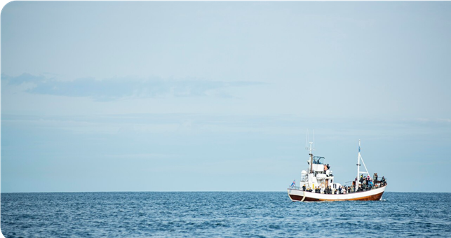

Ісландія має одну з найбільших і найцінніших рибних промисловостей у світі. Острів знаходиться в одному з найпродуктивніших рибальських районів Атлантики, де водяться тріска, лосось, оселедець та інші види риб. Ісландія є великим експортером рибної продукції, що становить значну частину її економіки. Країна активно розвиває екологічно чисте та сталий рибальство, що дозволяє підтримувати популяцію риб і забезпечувати високоякісну продукцію.
